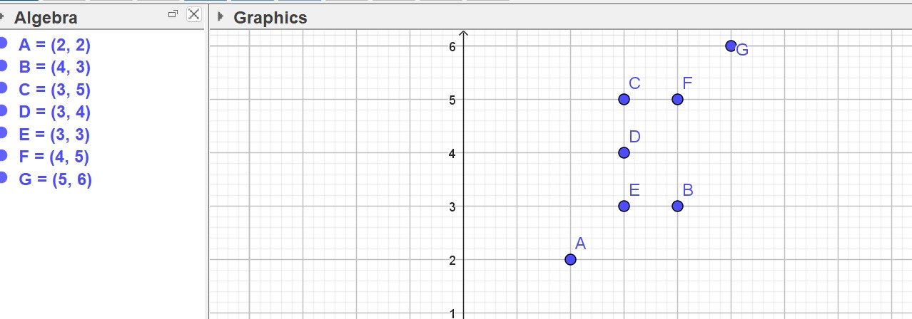
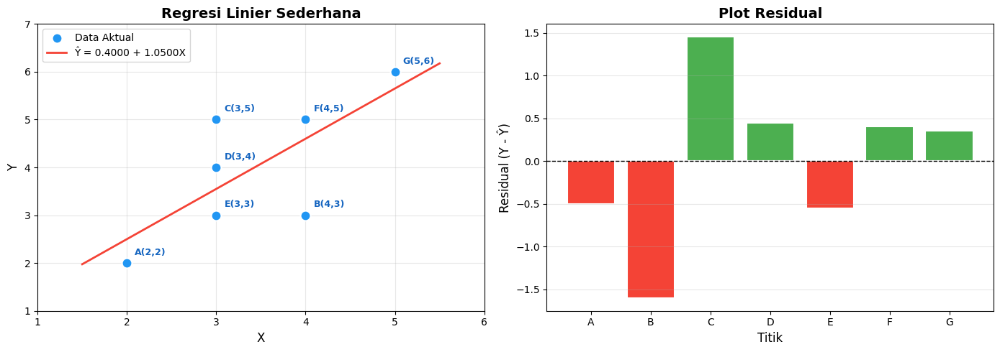
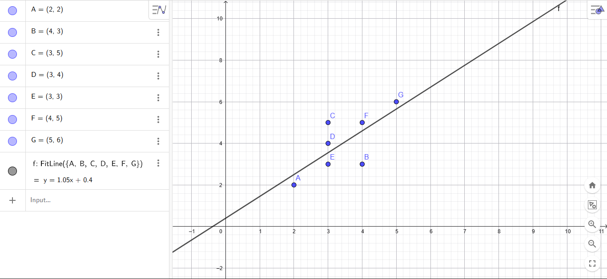

Analisis Regresi Linier#
Notebook ini berisi penjelasan detail mengenai Regresi Linier Sederhana (Simple Linear Regression) dan pengimplementasiannya menggunakan dua pendekatan:
Menggunakan Library Scikit-Learn (
LinearRegression)Perhitungan Analitik (Manual) menggunakan rumus koefisien regresi
Data Soal#
Diberikan 7 titik data:
Titik |
X |
Y |
|---|---|---|
A |
2 |
2 |
B |
4 |
3 |
C |
3 |
5 |
D |
3 |
4 |
E |
3 |
3 |
F |
4 |
5 |
G |
5 |
6 |

1. Teori Regresi Linier Sederhana#
Regresi Linier Sederhana adalah metode statistik yang digunakan untuk memodelkan hubungan linier antara satu variabel independen (\(X\)) dan satu variabel dependen (\(Y\)).
Persamaan Garis Regresi#
Di mana:
\(\hat{Y}\) : Nilai prediksi variabel dependen
\(b_0\) : Intercept (konstanta) — titik potong garis regresi dengan sumbu Y
\(b_1\) : Slope (koefisien regresi) — kemiringan garis regresi
\(X\) : Variabel independen
Rumus Koefisien Regresi (Metode Least Square)#
Slope (\(b_1\)):
Intercept (\(b_0\)):
Di mana:
\(n\) : Jumlah data
\(\bar{X}\) : Rata-rata nilai X
\(\bar{Y}\) : Rata-rata nilai Y
2. Import Library#
import numpy as np
import pandas as pd
import matplotlib.pyplot as plt
from sklearn.linear_model import LinearRegression
3. Persiapan Data#
Memasukkan data dari soal ke dalam DataFrame.
# Data dari soal
data = {
'Titik': ['A', 'B', 'C', 'D', 'E', 'F', 'G'],
'X': [2, 4, 3, 3, 3, 4, 5],
'Y': [2, 3, 5, 4, 3, 5, 6]
}
df = pd.DataFrame(data)
print("=" * 40)
print(" DATA TITIK KOORDINAT")
print("=" * 40)
print(df.to_string(index=False))
print(f"\nJumlah data (n) = {len(df)}")
========================================
DATA TITIK KOORDINAT
========================================
Titik X Y
A 2 2
B 4 3
C 3 5
D 3 4
E 3 3
F 4 5
G 5 6
Jumlah data (n) = 7
4. Metode 1: Menggunakan Scikit-Learn (LinearRegression)#
Scikit-Learn menyediakan class LinearRegression yang secara otomatis menghitung koefisien regresi menggunakan metode Ordinary Least Squares (OLS).
# Menyiapkan data untuk sklearn (X harus berbentuk 2D)
X = df['X'].values.reshape(-1, 1)
Y = df['Y'].values
# Membuat dan melatih model
model = LinearRegression()
model.fit(X, Y)
# Mengambil koefisien
b1_sklearn = model.coef_[0] # Slope
b0_sklearn = model.intercept_ # Intercept
r_squared = model.score(X, Y) # R-squared
print("=" * 50)
print(" HASIL REGRESI LINIER (Scikit-Learn)")
print("=" * 50)
print(f" Slope (b1) = {b1_sklearn:.4f}")
print(f" Intercept (b0) = {b0_sklearn:.4f}")
print(f" R-squared (R²) = {r_squared:.4f}")
print(f"\n Persamaan Regresi: Y = {b0_sklearn:.4f} + {b1_sklearn:.4f} * X")
print("=" * 50)
==================================================
HASIL REGRESI LINIER (Scikit-Learn)
==================================================
Slope (b1) = 1.0500
Intercept (b0) = 0.4000
R-squared (R²) = 0.5250
Persamaan Regresi: Y = 0.4000 + 1.0500 * X
==================================================
# Prediksi nilai Y menggunakan model sklearn
Y_pred_sklearn = model.predict(X)
df_hasil_sklearn = df.copy()
df_hasil_sklearn['Y_prediksi'] = np.round(Y_pred_sklearn, 4)
df_hasil_sklearn['Residual'] = np.round(Y - Y_pred_sklearn, 4)
print("\nHasil Prediksi (Scikit-Learn):")
print(df_hasil_sklearn.to_string(index=False))
Hasil Prediksi (Scikit-Learn):
Titik X Y Y_prediksi Residual
A 2 2 2.50 -0.50
B 4 3 4.60 -1.60
C 3 5 3.55 1.45
D 3 4 3.55 0.45
E 3 3 3.55 -0.55
F 4 5 4.60 0.40
G 5 6 5.65 0.35
5. Metode 2: Perhitungan Analitik (Manual)#
Pada bagian ini, kita akan menghitung koefisien regresi secara manual menggunakan rumus Least Square untuk membuktikan hasilnya sama dengan Scikit-Learn.
# Variabel dasar
Xi = df['X'].values
Yi = df['Y'].values
n = len(Xi)
# Membuat tabel perhitungan
df_calc = pd.DataFrame({
'Titik': df['Titik'],
'Xi': Xi,
'Yi': Yi,
'Xi²': Xi ** 2,
'Yi²': Yi ** 2,
'Xi·Yi': Xi * Yi
})
# Menghitung total
sum_Xi = np.sum(Xi)
sum_Yi = np.sum(Yi)
sum_Xi2 = np.sum(Xi ** 2)
sum_Yi2 = np.sum(Yi ** 2)
sum_XiYi = np.sum(Xi * Yi)
print("=" * 55)
print(" TABEL PERHITUNGAN ANALITIK")
print("=" * 55)
print(df_calc.to_string(index=False))
print("-" * 55)
print(f" Σ {sum_Xi:5} {sum_Yi:5} {sum_Xi2:5} {sum_Yi2:5} {sum_XiYi:7}")
print("=" * 55)
=======================================================
TABEL PERHITUNGAN ANALITIK
=======================================================
Titik Xi Yi Xi² Yi² Xi·Yi
A 2 2 4 4 4
B 4 3 16 9 12
C 3 5 9 25 15
D 3 4 9 16 12
E 3 3 9 9 9
F 4 5 16 25 20
G 5 6 25 36 30
-------------------------------------------------------
Σ 24 28 88 124 102
=======================================================
# Menghitung rata-rata
X_bar = sum_Xi / n
Y_bar = sum_Yi / n
print("=" * 50)
print(" PERHITUNGAN KOEFISIEN REGRESI")
print("=" * 50)
print(f"\n n = {n}")
print(f" ΣXi = {sum_Xi}")
print(f" ΣYi = {sum_Yi}")
print(f" ΣXi² = {sum_Xi2}")
print(f" ΣXi·Yi = {sum_XiYi}")
print(f" X̄ (rata-rata X) = {X_bar:.4f}")
print(f" Ȳ (rata-rata Y) = {Y_bar:.4f}")
# Menghitung b1 (Slope)
pembilang_b1 = n * sum_XiYi - sum_Xi * sum_Yi
penyebut_b1 = n * sum_Xi2 - sum_Xi ** 2
b1_analitik = pembilang_b1 / penyebut_b1
print(f"\n--- Menghitung Slope (b1) ---")
print(f" Pembilang = n·ΣXiYi - ΣXi·ΣYi")
print(f" = {n}×{sum_XiYi} - {sum_Xi}×{sum_Yi}")
print(f" = {n * sum_XiYi} - {sum_Xi * sum_Yi}")
print(f" = {pembilang_b1}")
print(f" Penyebut = n·ΣXi² - (ΣXi)²")
print(f" = {n}×{sum_Xi2} - {sum_Xi}²")
print(f" = {n * sum_Xi2} - {sum_Xi ** 2}")
print(f" = {penyebut_b1}")
print(f" b1 = {pembilang_b1} / {penyebut_b1} = {b1_analitik:.4f}")
# Menghitung b0 (Intercept)
b0_analitik = Y_bar - b1_analitik * X_bar
print(f"\n--- Menghitung Intercept (b0) ---")
print(f" b0 = Ȳ - b1·X̄")
print(f" = {Y_bar:.4f} - {b1_analitik:.4f}×{X_bar:.4f}")
print(f" = {Y_bar:.4f} - {b1_analitik * X_bar:.4f}")
print(f" = {b0_analitik:.4f}")
print(f"\n{'=' * 50}")
print(f" PERSAMAAN REGRESI (Analitik):")
print(f" Ŷ = {b0_analitik:.4f} + {b1_analitik:.4f} · X")
print(f"{'=' * 50}")
==================================================
PERHITUNGAN KOEFISIEN REGRESI
==================================================
n = 7
ΣXi = 24
ΣYi = 28
ΣXi² = 88
ΣXi·Yi = 102
X̄ (rata-rata X) = 3.4286
Ȳ (rata-rata Y) = 4.0000
--- Menghitung Slope (b1) ---
Pembilang = n·ΣXiYi - ΣXi·ΣYi
= 7×102 - 24×28
= 714 - 672
= 42
Penyebut = n·ΣXi² - (ΣXi)²
= 7×88 - 24²
= 616 - 576
= 40
b1 = 42 / 40 = 1.0500
--- Menghitung Intercept (b0) ---
b0 = Ȳ - b1·X̄
= 4.0000 - 1.0500×3.4286
= 4.0000 - 3.6000
= 0.4000
==================================================
PERSAMAAN REGRESI (Analitik):
Ŷ = 0.4000 + 1.0500 · X
==================================================
# Prediksi Y menggunakan rumus analitik
Y_pred_analitik = b0_analitik + b1_analitik * Xi
df_hasil_analitik = df.copy()
df_hasil_analitik['Y_prediksi'] = np.round(Y_pred_analitik, 4)
df_hasil_analitik['Residual'] = np.round(Yi - Y_pred_analitik, 4)
print("\nHasil Prediksi (Analitik):")
print(df_hasil_analitik.to_string(index=False))
Hasil Prediksi (Analitik):
Titik X Y Y_prediksi Residual
A 2 2 2.50 -0.50
B 4 3 4.60 -1.60
C 3 5 3.55 1.45
D 3 4 3.55 0.45
E 3 3 3.55 -0.55
F 4 5 4.60 0.40
G 5 6 5.65 0.35
6. Menghitung R² (Koefisien Determinasi) Secara Analitik#
Di mana:
\(SS_{res} = \sum (Y_i - \hat{Y}_i)^2\) (Sum of Squared Residuals)
\(SS_{tot} = \sum (Y_i - \bar{Y})^2\) (Total Sum of Squares)
# Menghitung R² secara analitik
SS_res = np.sum((Yi - Y_pred_analitik) ** 2)
SS_tot = np.sum((Yi - Y_bar) ** 2)
R2_analitik = 1 - (SS_res / SS_tot)
# Koefisien Korelasi (r)
r_analitik = np.sqrt(R2_analitik) if b1_analitik > 0 else -np.sqrt(R2_analitik)
print("=" * 50)
print(" KOEFISIEN DETERMINASI & KORELASI")
print("=" * 50)
print(f" SS_res (Sum Sq. Residuals) = {SS_res:.4f}")
print(f" SS_tot (Total Sum Sq.) = {SS_tot:.4f}")
print(f" R² (Koef. Determinasi) = {R2_analitik:.4f}")
print(f" r (Koef. Korelasi) = {r_analitik:.4f}")
print(f"\n Interpretasi: {R2_analitik*100:.2f}% variasi Y dapat")
print(f" dijelaskan oleh variabel X.")
print("=" * 50)
==================================================
KOEFISIEN DETERMINASI & KORELASI
==================================================
SS_res (Sum Sq. Residuals) = 5.7000
SS_tot (Total Sum Sq.) = 12.0000
R² (Koef. Determinasi) = 0.5250
r (Koef. Korelasi) = 0.7246
Interpretasi: 52.50% variasi Y dapat
dijelaskan oleh variabel X.
==================================================
7. Perbandingan Hasil: Scikit-Learn vs Analitik#
# Membandingkan hasil kedua metode
comparison = pd.DataFrame({
'Parameter': ['Slope (b1)', 'Intercept (b0)', 'R²'],
'Scikit-Learn': [round(b1_sklearn, 4), round(b0_sklearn, 4), round(r_squared, 4)],
'Analitik': [round(b1_analitik, 4), round(b0_analitik, 4), round(R2_analitik, 4)],
'Selisih': [
round(abs(b1_sklearn - b1_analitik), 10),
round(abs(b0_sklearn - b0_analitik), 10),
round(abs(r_squared - R2_analitik), 10)
]
})
print("=" * 60)
print(" PERBANDINGAN: Scikit-Learn vs Analitik")
print("=" * 60)
print(comparison.to_string(index=False))
print("\n✅ Hasil kedua metode IDENTIK (selisih = 0)")
============================================================
PERBANDINGAN: Scikit-Learn vs Analitik
============================================================
Parameter Scikit-Learn Analitik Selisih
Slope (b1) 1.050 1.050 0.0
Intercept (b0) 0.400 0.400 0.0
R² 0.525 0.525 0.0
✅ Hasil kedua metode IDENTIK (selisih = 0)
8. Visualisasi Regresi Linier#
fig, axes = plt.subplots(1, 2, figsize=(14, 5))
# === Plot 1: Scatter + Garis Regresi ===
ax1 = axes[0]
ax1.scatter(Xi, Yi, color='#2196F3', s=100, zorder=5, edgecolors='white', linewidths=1.5, label='Data Aktual')
# Garis regresi
x_line = np.linspace(min(Xi) - 0.5, max(Xi) + 0.5, 100)
y_line = b0_analitik + b1_analitik * x_line
ax1.plot(x_line, y_line, color='#F44336', linewidth=2, label=f'Ŷ = {b0_analitik:.4f} + {b1_analitik:.4f}X')
# Label titik
for i, titik in enumerate(df['Titik']):
ax1.annotate(f'{titik}({Xi[i]},{Yi[i]})', (Xi[i], Yi[i]),
textcoords='offset points', xytext=(8, 8),
fontsize=9, fontweight='bold', color='#1565C0')
ax1.set_xlabel('X', fontsize=12)
ax1.set_ylabel('Y', fontsize=12)
ax1.set_title('Regresi Linier Sederhana', fontsize=14, fontweight='bold')
ax1.legend(fontsize=10)
ax1.grid(True, alpha=0.3)
ax1.set_xlim(1, 6)
ax1.set_ylim(1, 7)
# === Plot 2: Residual Plot ===
ax2 = axes[1]
residuals = Yi - Y_pred_analitik
ax2.bar(df['Titik'], residuals, color=['#4CAF50' if r >= 0 else '#F44336' for r in residuals],
edgecolor='white', linewidth=1.5)
ax2.axhline(y=0, color='black', linewidth=1, linestyle='--')
ax2.set_xlabel('Titik', fontsize=12)
ax2.set_ylabel('Residual (Y - Ŷ)', fontsize=12)
ax2.set_title('Plot Residual', fontsize=14, fontweight='bold')
ax2.grid(True, alpha=0.3, axis='y')
plt.tight_layout()
plt.savefig('data/Regresi_Linier/regresi_linier_plot.png', dpi=150, bbox_inches='tight')
plt.show()
print("\n📊 Grafik disimpan ke: data/Regresi_Linier/regresi_linier_plot.png")

📊 Grafik disimpan ke: data/Regresi_Linier/regresi_linier_plot.png
9. Implementasi di GeoGebra#
GeoGebra adalah software matematika dinamis yang dapat digunakan untuk memvisualisasikan dan menghitung regresi linier secara interaktif.
Cara Implementasi di GeoGebra (Step-by-Step)#
Langkah 1: Buka GeoGebra#
Buka GeoGebra Classic melalui browser di geogebra.org/classic, atau gunakan aplikasi desktop GeoGebra.
Pastikan tampilan Grafik (Graphics) dan Aljabar (Algebra) aktif.
Langkah 2: Masukkan Titik-Titik Data#
Pada kolom input di bagian kiri/bawah, ketikkan perintah berikut satu per satu lalu tekan Enter:
A = (2, 2)
B = (4, 3)
C = (3, 5)
D = (3, 4)
E = (3, 3)
F = (4, 5)
G = (5, 6)
Setiap perintah akan membuat sebuah titik pada bidang koordinat. Titik-titik akan muncul di panel Aljabar dan di Grafik.
Langkah 3: Buat Garis Regresi dengan FitLine#
Setelah semua titik dimasukkan, ketikkan perintah berikut pada kolom input:
FitLine({A, B, C, D, E, F, G})
Perintah FitLine akan secara otomatis menghitung garis regresi linier menggunakan metode Least Squares dan menampilkan hasilnya.
Langkah 4: Lihat Hasil#
Di panel Aljabar, akan muncul persamaan garis regresi:
Hasil ini IDENTIK dengan perhitungan analitik dan Scikit-Learn:
Slope (b1) = 1.05
Intercept (b0) = 0.4
Hasil GeoGebra#

Perintah GeoGebra Lainnya yang Berguna#
Perintah |
Fungsi |
|---|---|
|
Garis regresi linier (Least Squares) |
|
Regresi polinomial derajat 2 |
|
Regresi eksponensial |
|
Regresi logaritmik |
|
Menghitung nilai R² |
Catatan: Untuk menghitung R² di GeoGebra, gunakan perintah
RSquare(f, {A,B,C,D,E,F,G})setelah membuat garis regresif.
10. Kesimpulan#
Dari analisis Regresi Linier Sederhana pada 7 titik data menggunakan tiga metode (Scikit-Learn, Analitik, dan GeoGebra), diperoleh hasil sebagai berikut:
print("╔" + "═" * 58 + "╗")
print("║" + " RINGKASAN HASIL ANALISIS".ljust(58) + "║")
print("╠" + "═" * 58 + "╣")
print(f"║ Persamaan Regresi : Ŷ = {b0_analitik:.4f} + {b1_analitik:.4f}·X".ljust(58) + " ║")
print(f"║ Slope (b1) : {b1_analitik:.4f}".ljust(58) + " ║")
print(f"║ Intercept (b0) : {b0_analitik:.4f}".ljust(58) + " ║")
print(f"║ R² (Determinasi) : {R2_analitik:.4f} ({R2_analitik*100:.2f}%)".ljust(58) + " ║")
print(f"║ r (Korelasi) : {r_analitik:.4f}".ljust(58) + " ║")
print("╠" + "═" * 58 + "╣")
print("║ Interpretasi:".ljust(58) + " ║")
print(f"║ • Setiap kenaikan 1 unit X, Y naik {b1_analitik:.4f} unit".ljust(58) + " ║")
print(f"║ • {R2_analitik*100:.2f}% variasi Y dijelaskan oleh X".ljust(58) + " ║")
print(f"║ • Hubungan X dan Y bersifat POSITIF & cukup kuat".ljust(58) + " ║")
print("║ • Hasil sklearn dan analitik IDENTIK ✅".ljust(58) + " ║")
print("╚" + "═" * 58 + "╝")
╔══════════════════════════════════════════════════════════╗
║ RINGKASAN HASIL ANALISIS ║
╠══════════════════════════════════════════════════════════╣
║ Persamaan Regresi : Ŷ = 0.4000 + 1.0500·X ║
║ Slope (b1) : 1.0500 ║
║ Intercept (b0) : 0.4000 ║
║ R² (Determinasi) : 0.5250 (52.50%) ║
║ r (Korelasi) : 0.7246 ║
╠══════════════════════════════════════════════════════════╣
║ Interpretasi: ║
║ • Setiap kenaikan 1 unit X, Y naik 1.0500 unit ║
║ • 52.50% variasi Y dijelaskan oleh X ║
║ • Hubungan X dan Y bersifat POSITIF & cukup kuat ║
║ • Hasil sklearn dan analitik IDENTIK ✅ ║
╚══════════════════════════════════════════════════════════╝